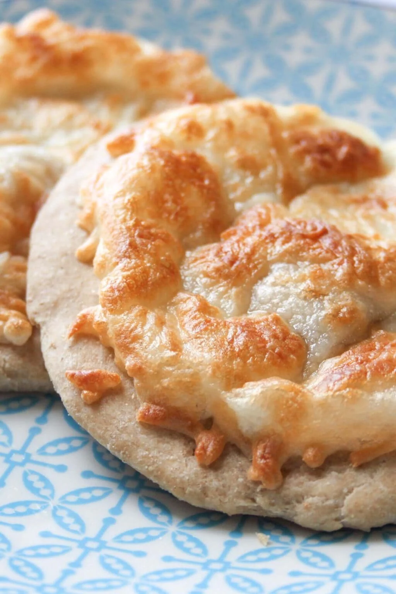

mankoush'recipes

Description
Cheese manakish is a delicious Lebanese flatbread made with a mixture of shredded cheese on homemade dough. It's
kind of like a Middle Eastern pizza but better. After all, what's better than gooey, melted cheese wrapped up in
warm flatbread dough?
Ingredients:
- Akkawi cheese: This is a kind of salty cheese often sold at Lebanese stores anywhere in the world. Make sure
to shred this cheese if you are going to use it in this recipe. A good substitute for akawi is mozzarella
(or any other cheese that melts well)
- Mozzarella cheese: I mix a little mozzarella cheese with akawi cheese and it makes for a delicious cheese
mixture.
- Teta's Homemade Dough Recipe: My favorite recipe for Lebanese dishes. Its ingredients are as follows: active
dry yeast, vegetable oil, milk, salt, sugar, flour, egg, and water. If you are short on time, you can use
ready-made pizza dough, whole wheat biscuit dough, and dinner roll dough.
- Dried herbs: Mint, oregano, basil, or thyme. These are optional but add a ton of flavor. I usually sprinkle
them on top of the pastries once they're out of the oven.
- Vegetables: Cucumbers, mint leaves, tomatoes, peppers. In Lebanon when you add veggies to any manousheh it
turns it into a "manousheh extra," so even though these are also optional, they are highly recommended.